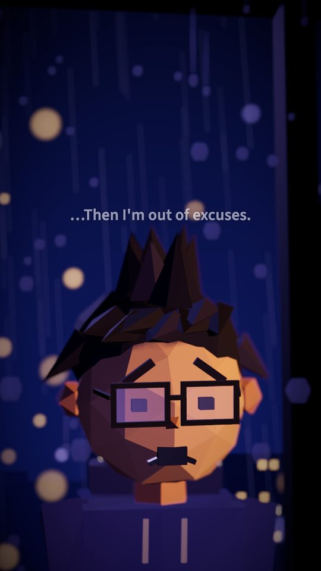
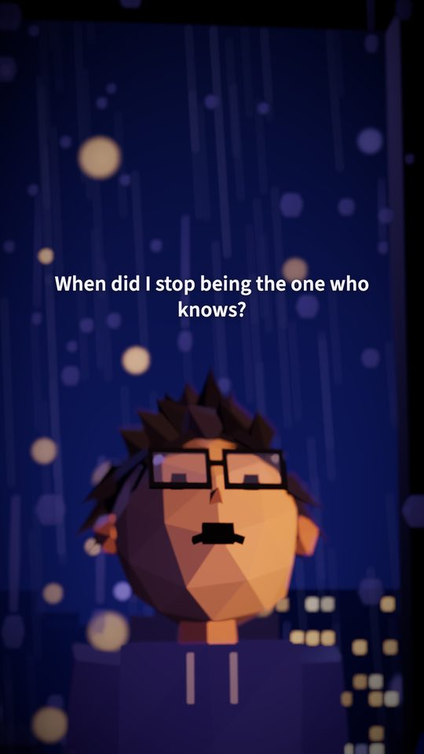
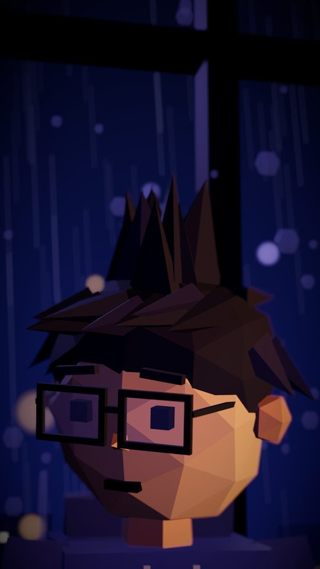

INT. SMALL APARTMENT — 3:12 A.M.
Rain on the window. A laptop. The product has been finished for six weeks. Nobody has seen it.
THEO
(to no one)
I'll post about it tomorrow.
An AI media team that writes, edits and ships short-form video, so the thing you built actually gets seen.

Scene 1 — The edit
Theo watches the whole thing the way an editor would. It finds the moments that stand on their own, skips the ones that could get you in trouble, and cuts the rest into finished vertical video.


Source: one long-form video
Editor time: zero
Render: about a minute per reel
Flagged before posting: 1
Scene 2 — How Theo works
Theo reads the full transcript, breaks it into timestamped chapters and decides which moments work on their own. Then it writes the titles and sets the mood for each one.
Faces stay in frame. Dead air disappears. Captions land word by word, music sits under the voice at the right level, and every reel gets its branding and a thumbnail.
Before anything goes out, Theo scores each clip for content-policy risk. That scoring was calibrated on real platform takedowns. Risky clips get flagged, and everything else is ready to post.
Scene 3 — No footage? No problem.
“When did I stop being the one who knows?”— Theo, episode 04
When there's nothing to cut, Theo writes the show. Our original 3D animated series was made this way: seven episodes, all scripted against a story bible, then voiced, scored and rendered.
Production notes
Claude is the core of Theo, not an add-on. It makes the editorial calls and writes the scripts. It also built much of the system and runs it every day.
Next episode
We're onboarding a small group of creators and teams. Tell us what you make, and we'll show you what Theo can ship.
hello@theocanship.com